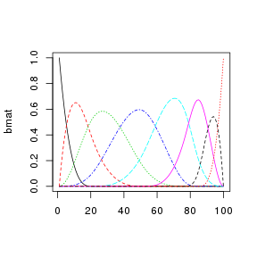
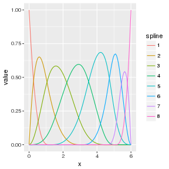
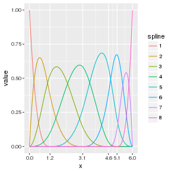

The recent release of Hadley Whickham’s ggplot2 version 2.2.0 included several new features. Notably
- Subtitles and captions.
- A large rewrite of the facetting system.
- Improved theme options.
- Better stacking.
What jumped out to me was the not in the first four points noted above, but a new option to display a secondary axis via sec.axis. The note and example in the RStudio blog post shows a secondary axis which is a one-to-one transformation of the primary axis.
This blog post covers my exploration of this tool as I have an immediate want, the sec.axis option to plot secondary axes. In the figure below I have plotted several B-spline basis functions. On the left side there x-axis has two labels, the knot sequence denoted with subscripted ξs and general sequence notation. Below each knot or subsequence of knots, are the numeric values for the knots. The graphic on the right side shows the same basis but uses the sec.axis option to plot the numeric values of the knots on top of the graphic and the knot sequence as the primary axis on the bottom.

The following are more details on the construction of these plots.
Basic plot of a B-spline Basis
My Ph.D. work involves the use of B-splines. I’ve had to plot the basis functions and the show the location of the knot sequence many times. Here is a very simple example. We will plot the basis for a standard cubic B-spline with knot sequence ξ = {0, 0, 0, 0, 1.2, 3.1, 4.6, 5.1, 6, 6, 6, 6}.
library(splines)
library(tibble)
library(dplyr)
library(tidyr)
library(ggplot2)
xvec <- seq(0, 6, length = 100) # data
iknots <- c(1.2, 3.1, 4.6, 5.1) # internal knots
bknots <- range(xvec) # boundary knots
k <- 4 # spline order (degree + 1)
xi <- c(rep(bknots[1], k), iknots, rep(bknots[2], k)) # full knot sequence
bmat <- bs(xvec, knots = iknots, intercept = TRUE) # basis matrixThe easiest plot of the spline functions is done via matplot.
matplot(bmat, type = "l")
This plot is okay. My major concern is that x-axis is an index, not the xvec values. Also, all my other graphics are generated via ggplot2 and therefore the basis plot should be too. A simple ggplot2 version of the basis plot is
# NOTE: as.data.frame is easier than dplyr::as_data_frame for this task
bmat_df <-
bmat %>%
as.data.frame %>%
add_column(x = xvec) %>%
gather(spline, value, -x)
base_plot <-
ggplot(bmat_df) +
aes(x = x, y = value, color = spline) +
geom_line()
base_plot
Show the location of the knots
To show the location of the knots on the x-axis is easy enough:
base_plot + scale_x_continuous(breaks = unique(xi))
What I really needed to do was show the location of the knots numerically and using subscripted ξj for simple knots and general sequence notation for repeated knots.
This is done by using the atop and group options within plotmath to generate the needed expression to be used in the x-axis ticks. The construction of the expressions is as follows:
expr <- list(bquote(atop(group('{', xi[j], '}')[j == 1]^{.(k)},
.(formatC(bknots[1], 1, format = "f")))))
if (length(xi) > 2 * k) {
for(i in seq(k + 1, length(xi) - k, by = 1)) {
expr <- c(expr, bquote(atop(xi[.(i)], .(formatC(xi[i], 1, format = "f")))))
}
}
expr <- c(expr,
bquote(atop(group('{', xi[j], '}')[j == .(length(xi) - k + 1L)]^{.(length(xi))},
.(formatC(bknots[2], 1, format = "f")))))The updated plot is:
base_plot + scale_x_continuous(breaks = unique(xi), labels = expr)
I liked this plot. However, the numeric values are not perfectly aligned. Using phantom within the grouping has proven to be non-trivial. So, I’ve been using this style of plot for awhile now.
Secondary Axis in ggplot2 v2.2.0
First, let’s clean up the expr to only have the knot sequence characters. No need for the atop as we only need the ξ characters and sequence notation no numeric values.
expr <- list(bquote(group('{', xi[j], '}')[j == 1]^{.(k)}))
if (length(xi) > 2 * k) {
for(i in seq(k + 1, length(xi) - k, by = 1)) {
expr <- c(expr, bquote(xi[.(i)]))
}
}
expr <- c(expr,
bquote(group('{', xi[j], '}')[j == .(length(xi) - k + 1L)]^{.(length(xi))}))Add the primary and secondary axis to base_plot via the argument sec.axis and the function sec_axis.
base_plot +
scale_x_continuous(breaks = unique(xi), labels = expr,
sec.axis = sec_axis(~ ., breaks = unique(xi)))
The first argument to sec.axis is a transform of the primary access values. ~ . is a identity transform. Other arguments sec.axis can take are name, breaks and labels, all of which behave as expected.
From my point of view, reporting both the knot sequence and the numeric values is too much. One or the other should be sufficient. However, my opinion only counts for so much. In my forthcoming cpr package there is a plotting method for B-spline bases with options to show_x and show_xi to control how knots locations are shown in the plot. If both options are FALSE then the default x-axis is plotted. Prior to ggplot2_2.2.0 being released, the options would control the expr object to plot the x-axis on the bottom. Now, with ggplot2_2.2.0 I plan to move away from atop and use sec.axis instead to give the end user the option to plot just the ξs, just the numeric values, or both.
Session Info
print(sessionInfo(), local = FALSE)
## R version 3.3.2 (2016-10-31)
## Platform: x86_64-pc-linux-gnu (64-bit)
## Running under: Debian GNU/Linux 8 (jessie)
##
## attached base packages:
## [1] splines stats graphics grDevices utils datasets base
##
## other attached packages:
## [1] ggplot2_2.2.0 tidyr_0.6.0 dplyr_0.5.0 tibble_1.2 knitr_1.15
##
## loaded via a namespace (and not attached):
## [1] Rcpp_0.12.7 digest_0.6.10 assertthat_0.1 plyr_1.8.4
## [5] grid_3.3.2 R6_2.2.0 gtable_0.2.0 DBI_0.5-1
## [9] magrittr_1.5 evaluate_0.10 scales_0.4.1 highr_0.6
## [13] stringi_1.1.2 lazyeval_0.2.0 labeling_0.3 tools_3.3.2
## [17] stringr_1.1.0 munsell_0.4.3 colorspace_1.3-0 gridExtra_2.2.1
## [21] methods_3.3.2